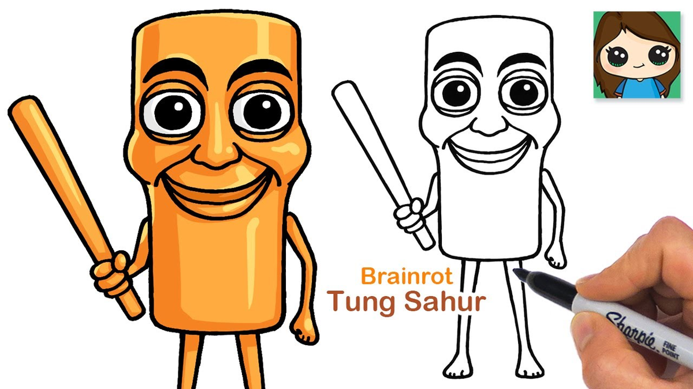

What Does Tung Tung Tung Sahur Mean?
"Tung tung tung" is not gibberish. It is the sound of a drum. Not a modern drum kit — a kentongan, a hollow wooden slit drum that has been used across Indonesia and Malaysia for generations to wake people for the pre-dawn Ramadan meal.
That meal is called sahur. Someone walks through the neighborhood before sunrise, strikes the kentongan in a steady rhythm, and that rhythm means: wake up and eat, because the fast starts at dawn.
The full name is Tung Tung Tung Tung Tung Tung Tung Tung Tung Sahur. Nine repetitions before the final word. That count is not a stylistic choice — it matches a traditional pattern used in some Indonesian villages to strike the kentongan at the start of sahur. The three-tung version most people use today is a modern shortening.
Hollow wooden drum. Struck with a plain stick. The character is based on this instrument.
Sound: "tung"Large barrel drum, hung inside mosques. Struck with a padded mallet. Often confused with the kentongan.
Sound: "dug"There is a folk warning attached to the character in the original voiceover: if you are called for sahur three times and do not answer, the kentongan comes to your house. The whole premise of the meme comes from that warning — not a monster, but a wooden alarm clock with a baseball bat.
Before the Meme: What Sahur Actually Is
The character did not come from nowhere. He came from a specific tradition that millions of people in Southeast Asia practice every year. Understanding it explains why the meme landed so hard.
During Ramadan, able-bodied Muslims fast from sunrise to sunset. The pre-dawn meal — sahur — is the last chance to eat and drink before the fast begins. In most countries, people wake themselves with an alarm clock. In Indonesia, that is only half the story.
In villages and small neighborhoods, someone walks the streets in the hours before dawn, striking a kentongan. The sound is not just a signal — it is a shared alarm. It wakes everyone in earshot at once, at the same time, on the same schedule. That collective rhythm became a small piece of community identity.
By the 2000s, loudspeakers and phones had replaced the kentongan in most cities. But the phrase "tung tung tung sahur" survived as a folk expression — something parents still say to children who sleep through their alarm. The meme took that familiar phrase and turned it into a character. The familiar sound made the video work even for viewers who had never seen the AI-generated image — they already knew the reference.
Why the Design Sticks
Hundreds of AI-generated characters appeared in the same week. Most of them disappeared within days. The ones that survived share four design decisions — none of which have anything to do with AI quality.
Eye-to-Head Ratio
The eyes take up roughly a third of the head. Real animals rarely have eyes that large relative to their skull. That ratio is what makes him look both infant-like and unsettling at once — a trick used in cartoon design for decades.
No Mouth
Just two large eyes above a smooth wooden surface. Most cartoon monsters show open jaws to read as threatening. This one is closed. His expression is whatever you project onto it — calm, curious, or about to swing.
Tool, Not Weapon
The bat hangs at his side the way a mallet hangs in a carpenter's hand. Loose grip, pointed down, ready for a downward strike. If it were raised over the shoulder, he would read as a fighter. Held like this, he reads as someone about to do a chore.
Desaturated Wood
His body is not warm brown. It is washed-out grayish beige — the color of old furniture left in a shed. That muted palette makes him read as ancient, even though the character is barely a year old.
Why This One Went Viral
Dozens of AI characters appeared in the same wave in early 2025. Only a handful became recognizable. Three things separated this one from the rest.
The Italian Brainrot Wave
Tung Tung Sahur did not appear alone. He arrived as part of a specific meme ecosystem — and understanding that ecosystem explains why so many of these characters look the way they do.
The trend started in January 2025 with a three-legged shark wearing blue Nike sneakers. Its name was Tralalero Tralala, and it was the first of what would become dozens of AI-generated characters with nonsensical Italian names and fake Italian voiceovers. The label "Italian brainrot" was applied retroactively — most of the creators were not Italian, and the language in the voiceovers was not real Italian.
The formula was simple: generate an absurd animal-object hybrid with AI, give it a rhyming name that sounds vaguely Italian, add a text-to-speech voice that mimics the accent, and post it on TikTok. The best characters in the wave all share the same properties — a clean silhouette, an ambiguous expression, and a name that is easy to chant.
Tralalero Tralala
The first. A shark with three legs and blue Nike sneakers. Started the entire genre and remains one of the most recognizable characters outside of Tung Tung Sahur himself.
Boneca Ambalabu
Frog head, tire body, human legs. Posted by the same creator who would later create Brr Brr Patapim. Predated Tung Tung Sahur by almost four weeks.
Brr Brr Patapim
Proboscis monkey fused with a tree. Wears a golden hat with a blue frog inside. Famous for the fan lore where he crushes Tung Tung Sahur beneath his feet.
Tung Tung Sahur
The one that broke out of the niche. Created by Indonesian TikTok user Noxa using DALL-E. The only character in the wave with roots in an actual cultural tradition.
What made Tung Tung Sahur different from the rest of the wave was not the design or the audio — it was the cultural anchor. Tralalero Tralala was absurd for its own sake. Tung Tung Sahur was absurd on top of something real. That extra layer is why he is the character who ended up in Fortnite, in the federal lawsuit, and on this site. The full character roster is here.
Playing the Game: What It Feels Like
The mechanics are on the How to Play page. This is what the actual experience is like for the first ten minutes — because that is what decides whether you keep playing.
You start next to a truck with an oven on one side and a pile of ingredients on the other. No tutorial prompt. No arrow pointing where to go. You figure it out by pressing the interact button on things until one of them works.
Within thirty seconds you understand the pacing. The wooden kentongan walks a slow loop through the forest. He does not chase you. He does not react to sound. He only turns his head when something moves in his line of sight. He is not trying to catch you — he is walking his route, and you are trying not to be on it.
The tension comes from the awareness that the moment you stop paying attention — the moment you look down at your inventory or check your phone — he might have walked into view. The game rewards stillness. If you sit behind a tree for two minutes doing nothing, nothing happens. If you sprint across a clearing, everything happens.
The first time you lose a life, it will almost certainly be because you moved too fast. The second time, it will be because you dug the wrong spot. The third time, you start to feel the rhythm. The entire learning curve fits into a single run that takes less than fifteen minutes.
What Each Zone Teaches You
The four zones are not just a difficulty slider. Each one changes a specific assumption you built in the previous zone. The full location guide has maps and patrol routes.
Dark Forest
The zone has three mistakes of forgiveness built into it — the patrol is slow, the paths are wide, and the trees hide you even when you are standing up. That generosity is a trap. It teaches you that the enemy is not the wooden figure. It is your own impatience.
Graveyard
Fog cuts visibility to eight meters. You cannot see the patrol from a distance — you have to listen. Footsteps echo through the graves before the figure enters view. This is the zone where you stop relying on sight and start tracking by sound.
Abandoned Village
The church bell rings the moment you enter the courtyard. From that point on, the patrol is actively walking toward you. You have thirty seconds. The zone teaches you that sometimes you cannot wait for the perfect moment — you have to pick an exit and go.
Cursed Mansion
Short hallways. Locked doors. A patrol loop that finishes in fifteen seconds. The Mansion forces you to think through the entire sequence — including the six-second dig and the walk back to the truck — before you commit to anything. This is where the game stops being a stealth game and becomes a planning game.
Five Mistakes Every New Player Makes
These are not mechanics you can learn from reading. They are habits you have to break. The full tips section covers each one in more detail.
Sprinting Everywhere
The instinct from every other horror game. It does not work here. Sprinting makes you visible and drains stamina.
Holding the Detector
Holding the scan button drains the battery in fifteen seconds. Tap instead. Every pulse is a resource.
Exploring First
The truck is the safest place on the map. Bake three loaves first, then explore with upgrades.
Digging Blind
The six-second dig leaves you exposed. Start it only when you cannot hear footsteps — not when you cannot see him.
Opening Every Door
Every door you open is a shortcut for the patrol too. Open only the ones on your planned route.
Tung Tung Tung Sahur in Fortnite
In April 2026 the character was added to Fortnite as a cosmetic skin — part of a themed bundle that ran for roughly two weeks. The skin has since rotated out of the Item Shop. Epic has not announced a return date, but crossover skins frequently come back during Halloween, Winterfest, and anniversary events.
Not everyone was happy about it. A group of players argued that Epic should not monetize a character whose copyright status is still being tested in court, and called for a boycott of the skin. Epic never responded publicly to the objection. That silence — and the fact that the bundle stayed in the shop for the full two weeks — became a smaller story on its own about how the games industry is handling AI-generated characters.
GIFs, Wallpapers, Drawing & Clickers
If you came here for the meme and not the game, this is the useful part. Each block points to a specific search term, not a generic category.

🎞️ GIFs
Two search terms on Tenor and GIPHY surface the cleanest loops: "tung tung tung sahur dance" and "tung tung sahur bat". The dance loop has the largest repost count across both platforms.
Meme archive →
📱 Wallpapers
Two styles dominate the wallpaper apps — dark forest portraits and neon-gradient posters. Chrome Web Store has a live animated version for desktop, which loops the character mid-dance over the browser background.
Where to find them →
✏️ Drawing
His design is beginner-friendly: rectangle for the body, two circles for eyes, one stick for the bat. The "AI-free" tag on TikTok has produced thousands of hand-drawn versions in protest of the original AI origin.
Step-by-step guide →
👆 Clicker Games
Two flavors exist. Mobile tap-to-survive games on Google Play are offline-playable and stick to the meme. Browser clickers like Italian Brainrot Clicker on CrazyGames add progression and unlockable characters.
Related games →On "Evil Tung Tung Sahur." Fan creators built a darker variant with red eyes and cracked wood. In horror game mods he acts as a hacker who wipes multiplayer lobbies. He is not official — there is no canonical "evil" version from the original creator. A related fan concept, Tung Tung God, depicts the character as an angelic white figure with wings. The two are usually paired in powerscaled battle videos.
Frequently Asked Questions
Six questions specific to this page. The main FAQ page covers lore, gameplay, legal, and technical questions separately.
Yes. The version on this page runs entirely in your browser. There is no account, no download, no ads, and no in-game purchases. You can complete a full run without spending anything.
Most runs finish between eight and fifteen minutes. The time depends on how quickly you locate the Golden Statue and whether you stop for optional relics like the bone charm or coin caches.
No. The character himself never speaks. In the original TikTok audio, the voiceover is a calm Indonesian narrator explaining the folk warning about sahur. All of the character's "dialogue" comes from the sound of the kentongan he is striking — which is why the name is onomatopoeia rather than a sentence.
Yes. The character was added as a cosmetic skin in April 2026 as a limited-time release. It has since rotated out of the Item Shop. Epic has not announced a return date.
A fan-made variant with red eyes and cracked wood. In horror mods he is portrayed as a hacker who wipes multiplayer lobbies. He is not an official character — the original creator has never released an "evil" version.
A browser or mobile game where you tap the screen repeatedly to survive waves of cursed meme monsters. Italian Brainrot Clicker on CrazyGames is the highest-rated version, with a score above eight out of ten from more than sixteen thousand players.
Disclaimer: This is an unofficial fan site. Tung Tung Tung Sahur and all related characters, names, and game content are the property of their respective creators and studios. This site is not affiliated with, endorsed by, or sponsored by any of them. All trademarks and copyrights belong to their owners.